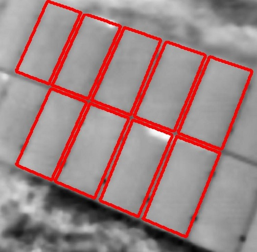

I am an Electrical Engineering student with a passion for new technologies that impact our day-to-day lives. One
of my primary interests is in understanding and designing machine-to-human as well as machine-to-machine
interactions.
Program development is not just about writing code that works; it is also about writing code that is scalable,
efficient, and reusable.
I strongly believe that "good" code is code that is thoroughly abstracted and unit tested. Well-designed
abstraction allows us to decouple complex programs to smaller, simpler modules that are easier to build,
manage, and test. Encapsulated modules are also easier to reuse and improves programmers' efficiency.
Since I started coding, I have continually worked on improving abstraction in my programs. The
n-body simulation
project is one of my favourite works that shows a good level of abstraction.
Currently, I am working on developing my knowledge of threading in POSIX systems.
Intelligent Control Systems
Control Engineering is essential to almost everything we see: from simple elevators to SpaceX's rockets. It is
required to regulate the performance of systems, thus ensuring smooth operation.
I first became addicted to control engineering when I built a light-tracking arm in my sophomore year. Since
then, I have worked on a wide variety of projects, from UAVs to social robots.
Currently, I am focusing on active control: how systems perceive and respond to highly dynamic environments.
Cloud Infrastructure
At Mercedes-Benz Research and Development North America (MBRDNA) in Seattle, WA, I worked with a software
development team to build Azure-based cloud infrastructure that automates and manages remote application
deployment.
With the certainty of self-driving cars looming in the horizon, the next step is in understanding fleet
management of autonomous cars. Through central decision-making systems, it would be possible to control the
routing of each autonomous vehicle to maximize benefit for cities and areas as a whole, and not just for
individual commuters. This will allow for more vigorous traffic management.
Such central decision making systems will require car-to-car and car-to-base communications, and this is made
possible through robust and secure cloud platforms.
At present MBRDNA's cloud platform is largely used for software deployment; however, I do belive that this
infrastructure will be essential for building a completely autonomous future.
Thermal Imaging

Advanced Visual Analytics Asia (AVA Asia), an upcoming start-up in Singapore, aims to build surveillance
technologies for aerial inspection of large solar farms. To achieve this, the team makes use of DJI UAVs
mounted with FLIR Thermal Imaging Cameras.
Faulty solar cells are known to have an abnormal thermal signature; they are often hotter than their
neighbours. Hence, by analysing the thermal images of the panels, it would be possible to identify the
presence of such cells. As a software engineer with AVA, my primary task was to work on developing
edge-detection and localization algorithms to pin-point the location of defective cells to an accuracy of one
sqaure meter.
Check out
this article
I wrote for
AVA Asia, to learn more about the need for aerial surveillance in the
solar industry!
Social Robot
At I2R, I worked on building a social "teddy-bear" robot designed to interact with autistic children. The goal
was to understand the moods of the children, and allow the robot to respond in an appropriate manner. For
example, if the child was punching the robot, it would respond sadly, and if he/ she was stroking the robot,
it would be happy.
The actions themselves were designed after watching countless videos of pet animal behaviours, and the motion
was controlled by motors hooked up to an Arduino Mega board. To interpret the child's gestures, we placed
touch sensitive receptors below the skin of the bear and classified the sensor data using machine learning
models. Gestures were classified using the force of the touch (i.e. how hard or soft the touch was) as well as
the duration of the touch.
The video above shows one of our very early prototypes that made use of an off-the-shelf teddy-bear skin.
Subsequent models were designed with a custom skin. The bear is currently being beta-tested with different
child care centers.
Stereo Vision
I worked at Prof. Silvia Ferrari's
Laboratory for Intelligent Systems and Controls (LISC)
at Cornell University. My project explored the possibility of incorporating depth information for nonlinear
target-tracking based on Gaussian processes.
To put it simply, the goal was to model a mobile robot and teach it to track a highly erratic moving target.
In order to enhance the robot's tracking ability, we included depth information obtained through a virtual
stereo-camera.
During the project, I first modeled a mobile stereo-camera to generate depth maps based on
Hirschmuller's algorithm for Semiglobal Matching.
Currently, I am working on using the depth maps for egomotion estimation based on optical flow subtraction.


Social Robot
At I2R, I worked on building a social "teddy-bear" robot designed to interact with autistic children. The goal was to understand the moods of the children, and allow the robot to respond in an appropriate manner. For example, if the child was punching the robot, it would respond sadly, and if he/ she was stroking the robot, it would be happy.
The actions themselves were designed after watching countless videos of pet animal behaviours, and the motion was controlled by motors hooked up to an Arduino Mega board. To interpret the child's gestures, we placed touch sensitive receptors below the skin of the bear and classified the sensor data using machine learning models. Gestures were classified using the force of the touch (i.e. how hard or soft the touch was) as well as the duration of the touch.
The video above shows one of our very early prototypes that made use of an off-the-shelf teddy-bear skin. Subsequent models were designed with a custom skin. The bear is currently being beta-tested with different child care centers.